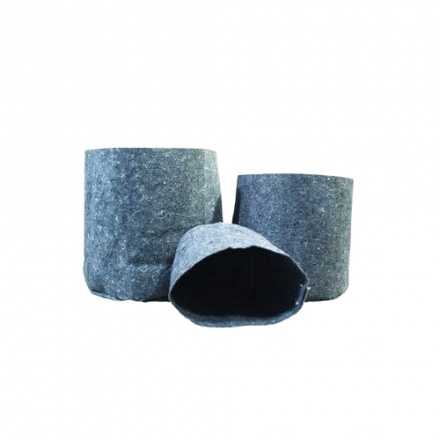
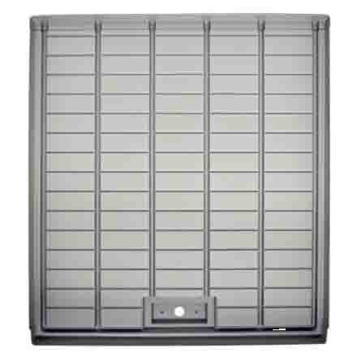
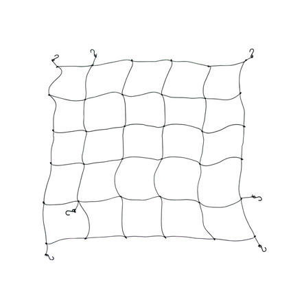

Корневая система — это фундамент вашего растения. Если корни задыхаются или им тесно, даже самое дорогое освещение не поможет получить качественные шишки. Правильный выбор горшка влияет на аэрацию почвы, дренаж и общую скорость роста.
Типы горшков: что выбрать?

Пластиковые горшки
Самый доступный вариант. Хорошо удерживают влагу, но могут привести к переливу и «задыханию» корней, если в них недостаточно дренажных отверстий.

Тканевые горшки (Air-Pots)
Золотой стандарт современного гровинга. Стенки дышат, что вызывает «воздушную обрезку» корней, предотвращая их скручивание и стимулируя рост новых боковых корешков.

Керамика и терракота
Пористый материал, который отлично отводит лишнюю влагу. Однако такие горшки тяжелые и требуют более частого полива.

Рекомендуемые объемы по стадиям роста
Размер емкости напрямую влияет на финальный размер куста. Чем больше земли, тем больше питания и тем выше растение:

- Рассада (1-2 недели): Стаканчики или маленькие горшки на 0.5 - 1 литр.
- Вегетация: Пересадка в емкости от 3 до 7 литров.
- Цветение (финал): Для полноценного куста рекомендуется объем от 10 до 20 литров (для автоцветов достаточно 11-15 л).
Дренаж — залог здоровья корней

Чтобы избежать корневой гнили, используйте слой дренажа на дне любого горшка. Это позволяет лишней воде быстро уходить, оставляя место для кислорода.
Керамзит

Облегченный вариант. Слой керамзита в 2-3 см на дне — обязательное условие для большинства субстратов.
Мелкий гравий

Традиционный метод. Обеспечивает отличный отвод воды, но делает горшок значительно тяжелее.
🌿 Подбираете полную систему?

Не забудьте про правильный субстрат, который идеально подойдет к вашим горшкам.
Выбрать субстрат